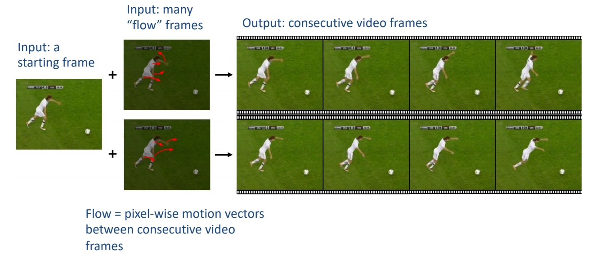
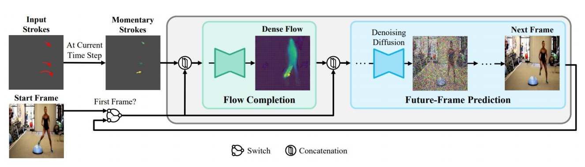
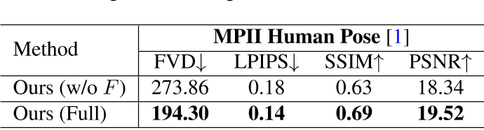

Motion-Conditioned Diffusion Model for Controllable Video Synthesis
INVIDIA， Google Research， 不开源
核心问题是什么?
目的
以一种更可控的方式描述要生成的内容和动作，进行Motion-guided video generation

现有方法及局限性
缺乏控制和描述所需内容和运动的有效方法
本文方法
用户通过一些短划线对图像帧进行描述，可以合成的预期的内容和动态。
- 利用flow completion model，基于视频帧的语义理解和稀疏运动控制来预测密集视频运动。
- 以输入图像为首帧，future-frame prediction model合成高质量的未来帧以形成输出视频。
效果
我们定性和定量地表明，MCDiff 在笔画引导的可控视频合成中实现了最先进的视觉质量。
核心贡献是什么？
大致方法是什么？
Two-stage autoregressive generation

MCDiff 是一种自回归视频合成模型。对于每个时间步，
输入：前一帧（即开始帧或预测的上一帧）和笔画的瞬时段（标记为彩色箭头，较亮的颜色表示较大的运动）引导。 输出：（1）flow completion model预测代表每像素瞬时运动的密集flow。(2)future-frame prediction model通过条件扩散过程根据前一帧和预测的密集流合成下一帧。
所有预测帧的集合形成一个视频序列，该序列遵循起始帧提供的上下文和笔划指定的运动。
视频动态标注
这一步用于构造dense flows。
- 计算两帧的光流。
- 计算两帧中的关键点的光流。
- 用2的flow代替1中有移动的点的flow。因为2的flow往往能更准确地描述人体形状。
[?] 每个关键点的flow不同，分别代替哪些像素点的flow？ [?] 这个方法只适用于有人且单人？
flow completion model F
| 输入 | 输出 | 方法 |
|---|---|---|
| dense flow | sparse flow | 下采样 1. 采样与关键点像素想关的flow。 2. flow magnitude大的采样概率大。 3. 同时采样背影或其它物体的运动 |
| 稀疏的拖拽信息 | 2D的稀疏光流表示 | w * h * 2的 矩阵，描述相对于上一帧的位移。由于是拖拽是稀疏光流，大部分格子上是没有拖拽信息的。把这些空白填上learnable embedding，表明用户没有在这些地方指定输入。 |
| 2D的稀疏光流表示 2D的图像信息 | UNet输入 | concat |
| UNet输入 | dense flow | UNet |
[?] 直接监督dense flow?
答：只是用了UNet，但没有用Diffusion。
future-frame prediction model G
输入：当前帧图像xi，当前帧到下一帧的光流di
输出：下一帧图像
方法：LDM
条件注入方式：concat(noise, xi, di)
训练
数据集
loss
训练策略
分别训练F和G，然后端到端finetune F和G。
F和G都使用UNet作为基本结构，但F是生成模型，直接预测图像。G是Diffusion模型，预测的是噪声，多次去噪迭代生成图像。
Motion-I2V是类似的工作，但它的第一步是通过diffusion根据图像生成合理的光流。
BaseModel: SD
实验与结论
**实验一：**横向对比 效果： SOTA
实验二：
- 不使用F，sparse flow直接预测视频
- full model
效果：

结论： 使用Dense flow能更消除歧义，降低学习难度
有效
局限性
启发
遗留问题
参考材料
项目启动页面：https://tsaishien-chen.github.io/MCDiff/ing